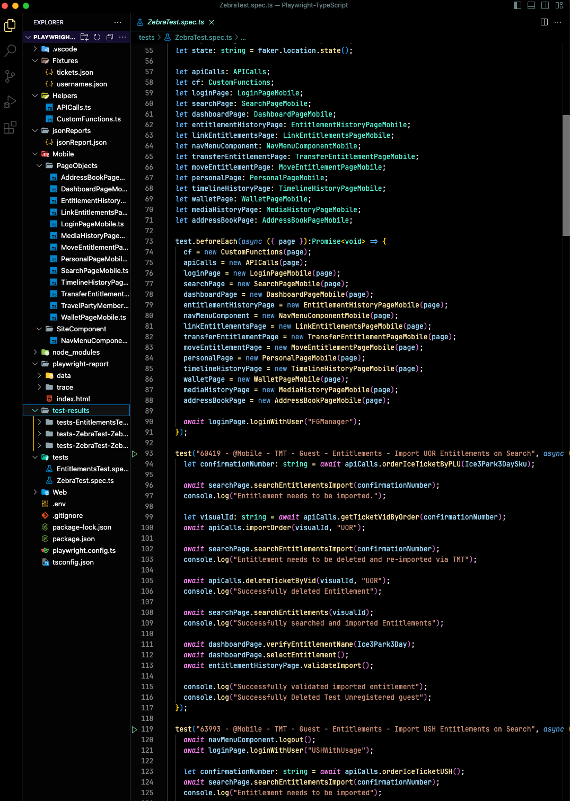

Problem
UI changes and async workflows created brittle tests and maintenance overhead.
Designed a modern UI/API automation framework with TypeScript-first patterns, resilient locators, and CI-friendly execution.

UI changes and async workflows created brittle tests and maintenance overhead.